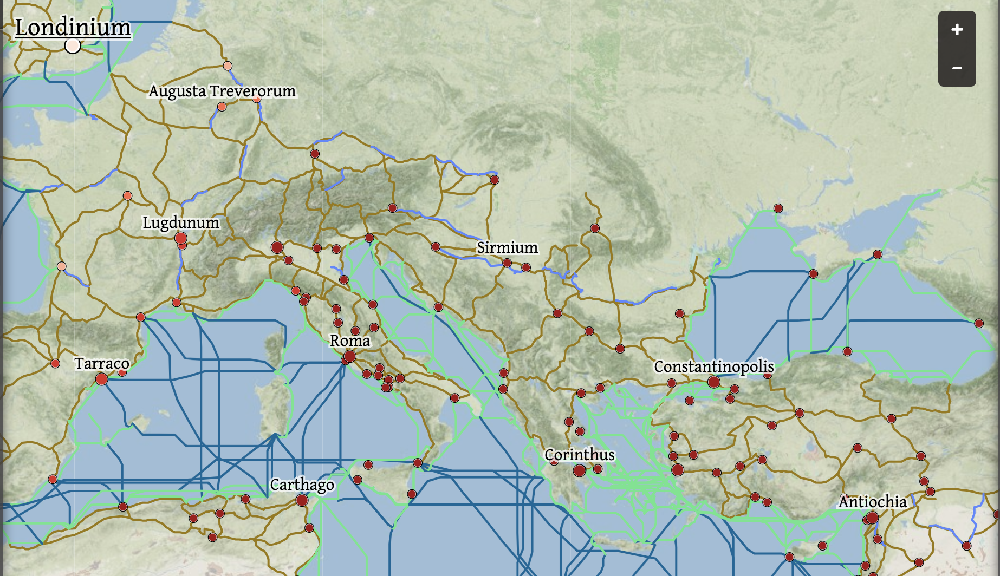

Discover marvels of the ancient world by placing thumb tacks on the physical map in front of you. RomanWaze will then calculate the distance, route, and other cartographical information to augment your experience!

Designed by Nick, Sarah, and Robbie (2019)